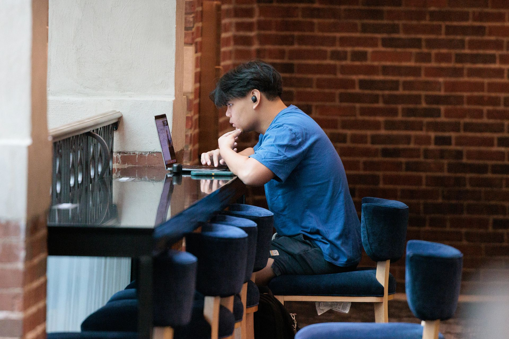

First Gen Gateway

What is the First-Gen Gateway?
The First Generation Student Gateway serves as a starting point to get connected to resources for first-generation students. Housed in the Office of Academic Multicultural Initiatives (OAMI), the Gateway is linked to several partner offices and is a home for support for first-generation students. The Gateway is for all first-generation undergraduate and graduate students and their allies. The Gateway is open during regular business hours (8AM-5PM). You can use the space for:
- Finding resources for first-generation students
- Connecting to partner offices that support first-generation students
- Meet with First Generation Project Manager Terra Molengraff
- Study space
- Meeting space

Location

The Gateway is located in the Office of Academic Multicultural Initiatives on the 3rd floor of the Student Activities Building at 515 E. Jefferson St.
First Generation Leadership Team
The First-Generation Leadership Team provides strategic direction to the First-Generation Program. The team is led by the first-generation program director and the directors of four offices, each of which connects the program to a different unit: Comprehensive Studies Program (LSA), Multi-Ethnic Student Affairs (Student Life), Office of New Student Programs (OEM), and the Office of Academic Multicultural Initiatives (ODEI). In the four-office structure, the program manager mobilizes resources from each office to a collective impact model to sustain commitment across stakeholders. Each of the four offices partners on First-Generation Gateway Programs.
Comprehensive Studies Program (CSP)
CSP provides comprehensive academic support to U-M students through the College of Literature, Science and the Arts courses, holistic academic advising, academic and co-curricular programming, and student support services that utilize high-impact, inclusive practices to encourage student agency and engagement. CSP serves students from all of U-M’s undergraduate-serving schools and colleges.
Highlights
- Multidisciplinary curriculum of courses in the natural sciences, social sciences, humanities, and mathematics
- Strengths-based, student-centered academic advising
- Summer Bridge Scholars Program

Multi-Ethnic Student Affairs (MESA)
MESA provides support and programming through celebrations, educational offerings, and building social capital through the lens of race and ethnicity. MESA is a unit in Student Life and is responsible for student development and empowerment of the entire campus community around issues of diversity and social justice through this lens.
Highlight
- Anti-Racism and Coalition Building Peer-led Teach-Ins
- Heritage months
- Mentor Programs
- Student Organization Grant program
- Togetherness: QTBIPOC Gatherings
- Welcome programs
Office of Academic Multicultural Initiatives (OAMI)
OAMI works collaboratively with campus and external partners to develop strategic programs that provide resources, opportunities, and experiences that enrich students’ academic, social, cultural, and personal development. OAMI is a unit of the Office of Diversity, Equity, and Inclusion. OAMI aligns with the strategic priorities of ODEI to lead and support university-wide initiatives focused on recruiting a diverse faculty, staff, and student body while fostering an inclusive and equitable university community. Our office also engages surrounding communities in mission-focused, mutually beneficial partnerships.
Highlights
- Community College Transfer Program
- Dance for Mother Earth Powwow
- Cultural Graduation Celebrations
- Juneteenth Symposium
- Student Academic Multicultural Initiatives Grant Funding (SAMI)
- SuccessConnects Coaching Program
- U-M Reverend Dr. Martin Luther King Jr. Symposium
- Undocumented Student Support
Office of New Student Programs (ONSP)
ONSP is part of the Office of Enrollment Management and engages Michigan students in the University community through our many programs.
Highlights
- Orientation Programs
- Parent and Family Programs
- Welcome to Michigan Program
- Mentorship Programs
- Veteran and Military Services
How to get involved?
Are you a student, staff or faculty interested in getting more involved with first-generation initiatives or learning more about the resources available to first-generation college students? To reach out to the program director: firstgeninfor@umich.edu